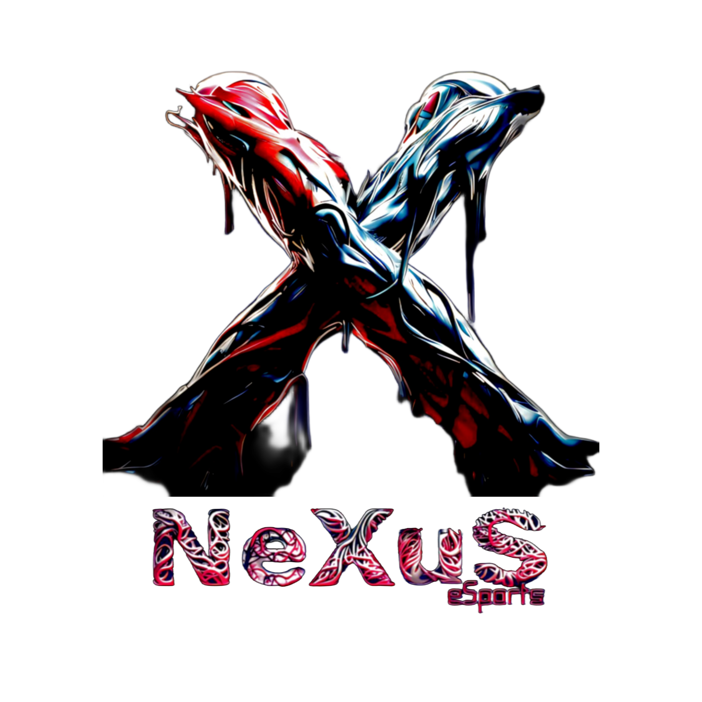

Register for the tournament now!.
Nexus eSports: a rising gaming clan hosting room events and tournaments. All can join Public Tournaments, clan affiliation notwithstanding. Interested in becoming a clan member? Connect using the details below and access exclusive events and opportunities in competitive gaming. Join Nexus eSports for a gaming journey like no other.
1.
Embark on a gaming journey with Nexus eSports. As a rising gaming clan, we're dedicated to hosting captivating room events and exhilarating tournaments that cater to players of all skill levels. Join our vibrant gaming community and embrace the spirit of competition and camaraderie.
2.
Our Public Tournaments are a testament to our commitment to unity in gaming. Regardless of your clan affiliation, you're invited to engage in thrilling competitions on a larger stage. Showcase your skills, connect with fellow gamers, and elevate your gaming journey with Nexus eSports.
3.
Diverse Gaming Selection and Community Integration: Our expansive assortment of games empowers users to establish their own communities and foster connections with our eSports network, facilitating enhanced assistance and support. Players can seamlessly link their preferred game clans with ours by reaching out to our dedicated support line, which offers multiple contact options conveniently located at the bottom of this webpage.
4.
Streaming Authorization Policy Update: We have recently implemented enhancements to our streaming services, enabling members of our clan to broadcast content on their personal YouTube channels or other streaming platforms. However, it is imperative to note that if you intend to stream tournaments or gameplay featuring fellow members of our eSports community, prior approval from our designated supervisor is mandatory. Additionally, if you wish to initiate your own streaming endeavors, obtaining permission from any of our supervisors is a prerequisite.
5.
Nexus eSports stands as a rising gaming clan with a strong commitment to fostering a vibrant gaming community. They host captivating room events and exhilarating tournaments that cater to players of all skill levels, irrespective of clan affiliation. Nexus eSports prides itself on its dedication to unity in gaming, inviting individuals from diverse backgrounds to engage in thrilling competitions and connect with fellow gamers. With an expansive assortment of games, Nexus eSports empowers users to build their own gaming communities and seamlessly link their preferred game clans with theirs. Furthermore, their support line, conveniently located at the bottom of their webpage, offers multiple contact options to facilitate community integration and provide enhanced assistance and support. Join Nexus eSports for an unmatched gaming journey that combines competition, camaraderie, and a diverse gaming selection.